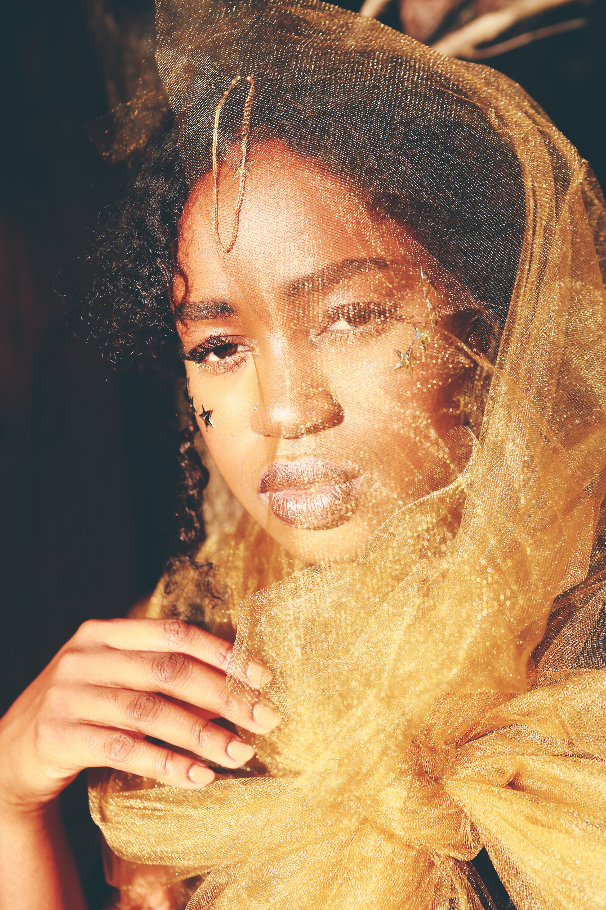
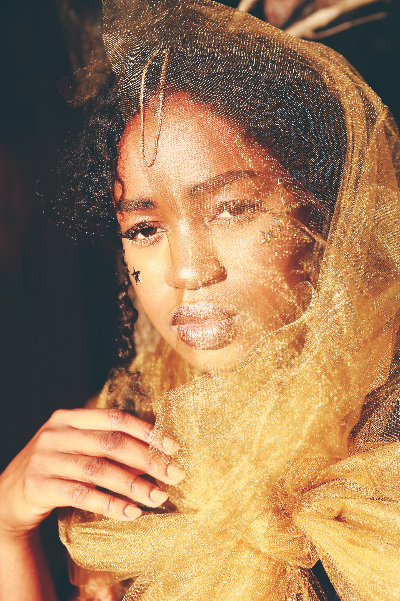

Fora do ambiente profissional e acadêmico, tenho uma série de hobbies. Adoro música e frequentemente me dedico a tocar instrumentos e descobrir novos sons. A arte é outra paixão minha, seja apreciando obras em galerias ou expressando minha criatividade através de projetos artísticos. Além disso, a fotografia me permite capturar momentos preciosos e contar histórias por meio das lentes da minha câmera. Nos momentos de lazer, gosto de passear ao ar livre, explorar novos lugares e desfrutar da natureza. Acredito que a vida é uma aventura, e estou sempre em busca de novas experiências e aprendizados.
Sou estudante de Análise e Desenvolvimento de Sistemas (ADS), uma área que me fascina e onde estou constantemente buscando conhecimento para me aprimorar. Minha paixão por tecnologia e resolução de problemas me levou a ingressar nesse campo empolgante. Além dos meus estudos, também tenho experiência anterior como colaborador em uma casa de leitura, onde pude compartilhar minha paixão pela literatura e auxiliar os leitores a descobrirem novos mundos através dos livros. Atualmente, trabalho como teleatendente em uma clínica de fisioterapia, onde adquiro conhecimento sobre a área de saúde e bem-estar. É gratificante poder contribuir para o cuidado e recuperação dos pacientes. Vale ressaltar que sou fluente em três idiomas: o francês, que é minha língua materna, o crioulo, também parte integral da minha cultura, e o português, que domino com fluência.

 
